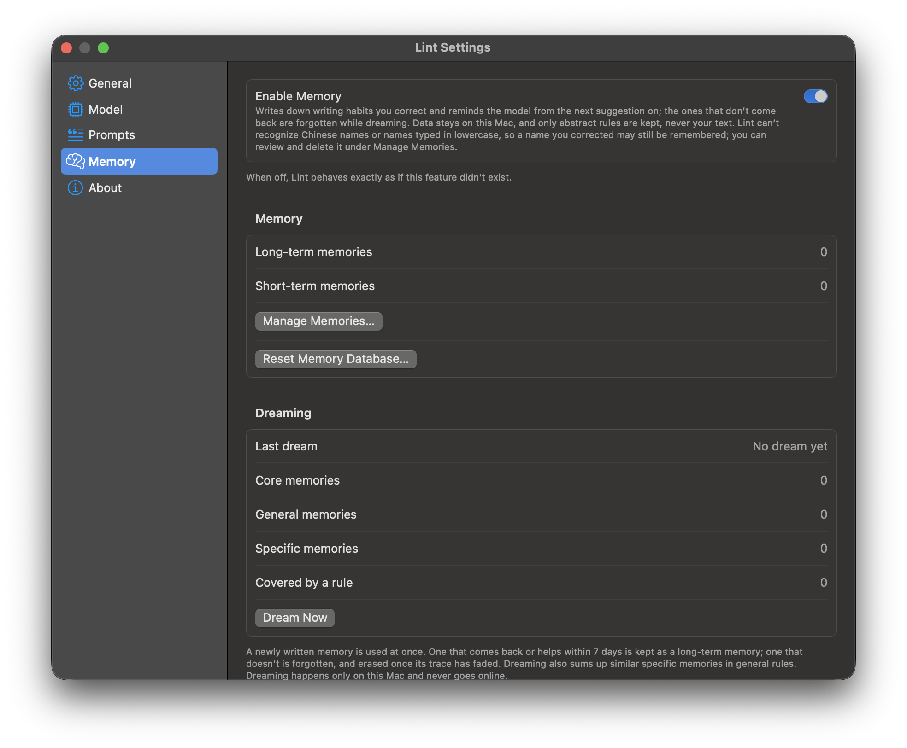
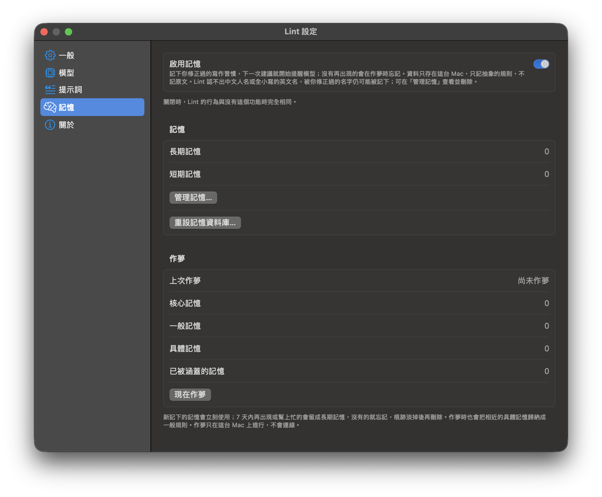
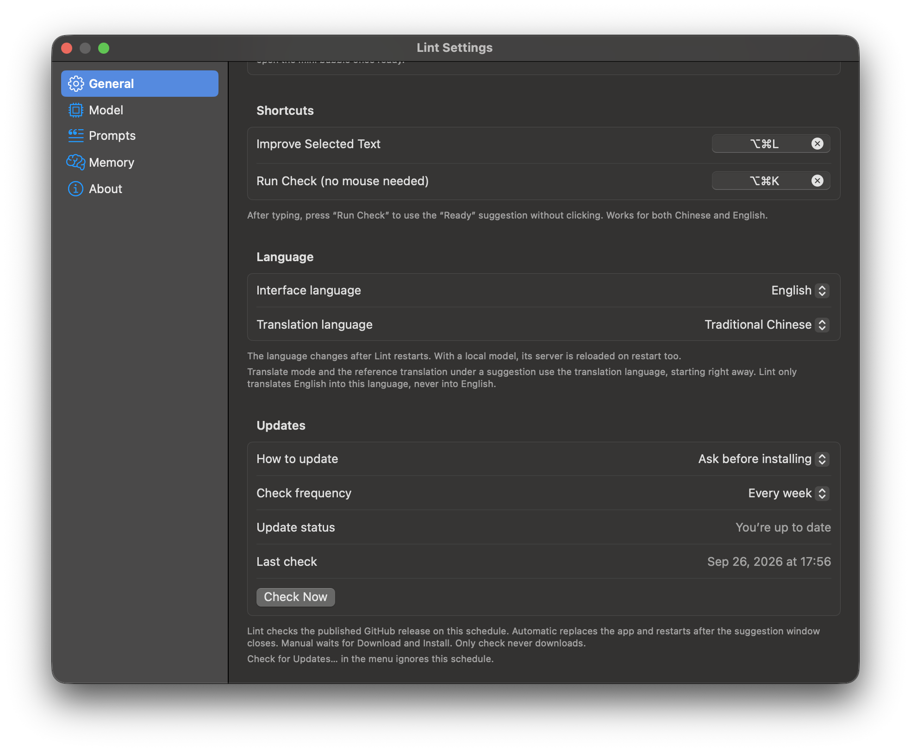
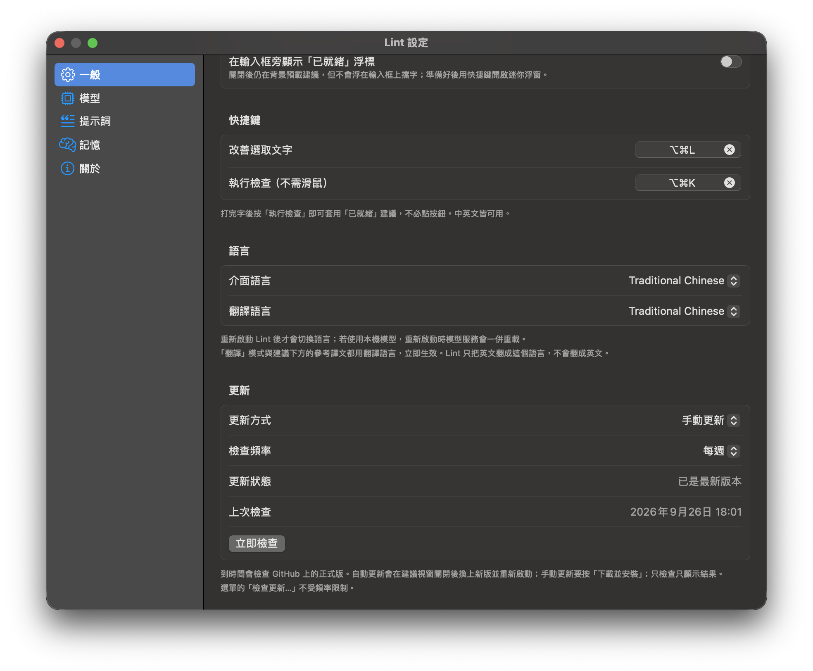

Works everywhere隨處可用
Native apps are read through Accessibility. Browsers and Electron apps such as Slack, SeaTalk and ChatGPT are switched on automatically.
原生 App 透過輔助功能讀取；瀏覽器與 Slack、SeaTalk、ChatGPT 等 Electron App 由 Lint 自動開啟。
A macOS menu-bar AI writing assistant. macOS 選單列 AI 寫作助手。
Select text in any app, press a hotkey, and compare the suggestion from a model that runs on your Mac. Then replace your text or copy the result. 在任何 App 選取文字、按下快捷鍵，就能比對在你 Mac 上執行的模型給的建議，然後直接取代原文或複製結果。


Select text in any app, or just keep typing
在任何 App 選取文字，或直接繼續打字
Lint prepares a suggestion in the background
Lint 在背景先準備好建議
Press ⌥⌘K for the bubble or ⌥⌘L for the full panel
按 ⌥⌘K 開浮窗，或按 ⌥⌘L 開完整面板
Replace your text, or copy the result
取代原文，或複製結果
⌥⌘L opens a panel with your text on the left and the suggestion on the right, every change marked. Edit either side, replace the original, copy it, or ask again.
⌥⌘L 打開雙欄面板，左邊是原文，右邊是建議，每一處修改都標出來。兩邊都能編輯，可以取代原文、複製，或重新產生。
Proofread & polish fixes grammar, wrong words and spelling, and keeps correct wording, names, numbers and your layout. Pick a tone: Preserve Tone, Formal, Concise or Professional.
「文法校對與潤飾」修正文法、用錯的字與拼字，保留正確的用字、人名、數字與版面。語氣可選保留原語氣、正式、簡潔或專業。


Translate turns English into the translation language you choose: Traditional or Simplified Chinese, Japanese, Korean, Vietnamese, Indonesian, Thai or Portuguese (Brazil). The bubble adds the same reference translation under each suggestion.
「翻譯」把英文翻成你選的翻譯語言：繁體或簡體中文、日文、韓文、越南文、印尼文、泰文或葡萄牙文（巴西）。浮窗也會在每個建議下方附上同一種語言的參考譯文。


llama.cpp ships inside Lint, no Homebrew needed, and Lint downloads the model (Gemma 4 E4B, about 5.2 GB) only after you agree. On macOS 26 you can use Apple Intelligence instead, with nothing to download.
llama.cpp 已經包在 Lint 裡，不需要 Homebrew；模型（Gemma 4 E4B，約 5.2 GB）要等你同意才下載。在 macOS 26 也可以改用 Apple Intelligence，不必下載任何東西。


Turn on Settings → Memory and Lint writes down the writing habits you keep correcting, such as a word you often misspell, as short rules, and reminds the model of them from the next suggestion on. While it dreams, it forgets the ones that don't come back. It is off by default.
在「設定 → 記憶」開啟後，Lint 會把你反覆修正的寫作習慣（例如常拼錯的字）記成簡短規則，下一次建議就開始提醒模型；作夢時會忘掉沒再出現的。預設關閉。


The interface speaks English, Traditional and Simplified Chinese, Japanese, Korean, Vietnamese, Indonesian, Thai and Portuguese (Brazil).
介面支援英文、繁體與簡體中文、日文、韓文、越南文、印尼文、泰文與葡萄牙文（巴西）。
Lint checks GitHub Releases for a new version, every week by default, and installs one only after its SHA-256 and Developer ID signature check out. It can ask first, install on its own, or only tell you.
Lint 會到 GitHub Releases 檢查新版（預設每週），SHA-256 與 Developer ID 簽章都核對無誤才安裝。可以設成先問你、自動安裝，或只通知你。


Native apps are read through Accessibility. Browsers and Electron apps such as Slack, SeaTalk and ChatGPT are switched on automatically.
原生 App 透過輔助功能讀取；瀏覽器與 Slack、SeaTalk、ChatGPT 等 Electron App 由 Lint 自動開啟。
While you type or select, Lint prepares the suggestion in the background, so the hotkey usually shows it at once.
你打字或選取時，Lint 就在背景準備建議，按下快捷鍵通常馬上就有。
Replace writes only over the text Lint checked. If that text changed in the meantime, Lint leaves your field alone.
取代只會寫在 Lint 檢查過的那段原文上；原文若在這之間被改動，Lint 就不動你的輸入框。
Rebind ⌥⌘K and ⌥⌘L, and edit the instructions for each mode and tone.
⌥⌘K 與 ⌥⌘L 都能重新綁定，每個模式與語氣的指示也都能修改。
Password fields are never read, and neither are 1Password, Bitwarden, KeePassXC or the Passwords app. What Lint reads is written down in SECURITY.md.
密碼欄位一律不讀，1Password、Bitwarden、KeePassXC 與系統的「密碼」App 也不讀。Lint 會讀什麼，寫在 SECURITY.md。
The bubble opens on the Space you are working in, fullscreen apps included.
浮窗會出現在你正在使用的 Space，包含全螢幕 App。
Get the latest DMG from GitHub Releases. Official releases are signed with a Developer ID certificate and notarized by Apple. The local AI runtime is inside; Lint asks before it downloads the model. 到 GitHub Releases 下載最新的 DMG。正式版以 Developer ID 憑證簽署並通過 Apple 公證。本機 AI 執行環境已內建，模型會在詢問你之後才下載。